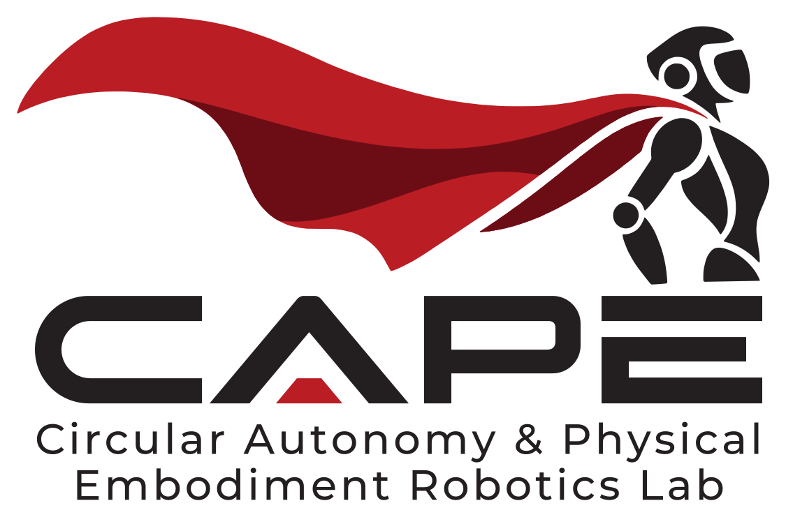

Department of Computer Science · University of Cape Town

CAPE Robotics Lab - Circular Autonomy & Physical Embodiment
CAPE Robotics Lab is a new robotics research group being established in the Department of Computer Science at the University of Cape Town.
Our goal is to develop robots that learn physical skills for real-world impact, with applications in environmental sustainability. From e-waste recovery and recycling to repair and remanufacturing.
Research Topics
Below are prospective topics that incoming students and researchers could work on:
Task and Motion Planning (TAMP) for Robotic Disassembly
Planning disassembly sequences for products whose condition, variant, or design is unknown in advance.
Deformable Linear Object Manipulation
Perceiving, untangling, and routing cables and wires, such as the cable bundles inside old computer cases.
Sim-to-Real Transfer & Synthetic Data for Robot Learning
Generative augmentation of robot demonstrations (e.g., NVIDIA Cosmos Transfer) to scale and diversify training data.
Reinforcement Learning for Contact-Rich Manipulation
Online RL and fine-tuning so policies improve on real hardware: unscrewing, unclipping, and connector removal.
Semantic Reasoning & Long-Horizon Task Planning
Grounding vision-language models in robot actions with chain-of-thought, behaviour trees, and hierarchical planning.
Execution Monitoring & Failure Recovery
Perception-based detection of task success and failure for deployed VLA policies, triggering retries or replanning.
Metric 3D Perception for Manipulation
Learned depth and 3D scene understanding accurate at real-world scale. Disassembly needs millimetres, not centimetres.
Your Own Proposal
A complementary topic aligned with the lab’s research, such as tactile sensing, inspection, or human-robot collaboration.
Looking for PhD Students
We have funded PhD positions for the 2027 intake through the NRF Presidential PhD Programme (PPP) in Digital Transformation.
- Funding: R200,000 per year for up to 3 years, plus equipment allowance, conference travel, and international mobility funding.
- Eligibility: Master’s in CS, IS, or a related field with at least 65% (completed by Dec 2026), based full-time in Cape Town for the fellowship.
- Key dates: Apply by 10 November 2026 (AoE). UCT CS parallel application by 15 November 2026.
- Application link: forms.gle/VacwKDwdDyBvNSTp7
* CAPE Robotics Lab selection is separate from UCT admissions and PPP funding decisions; endorsement does not guarantee admission or funding. Institutional criteria: sit.uct.ac.za/phd-and-post-doctoral-scholarships.
People
Contact
For questions regarding prospective research or PhD applications, please reach out:
Email: szwane@cs.uct.ac.za
Location: Department of Computer Science, School of IT, University of Cape Town, Rondebosch, Cape Town, South Africa